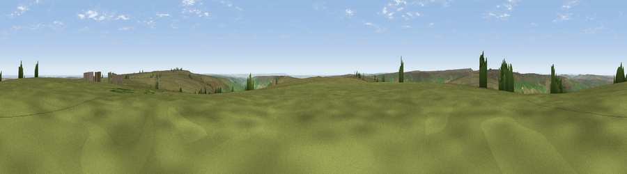

Viewpoint near Botton
#10084 in England · top 27% of its area beats it · near BottonThe view, rendered

A 360° render of this exact spot computed from the terrain model, tree cover and land cover — summer colours, afternoon light, calibrated against photographs of famous viewpoints. Real trees, hedges and buildings will differ in detail.
The panorama
Grey silhouette: terrain skyline in each direction (720 bearings, Earth curvature and refraction included). Dashed green: skyline with trees (+15 m) and buildings (+8 m) as obstacles. Blue strip: how far the ground is visible on each bearing.
Where the view opens
Wedge length = distance to the farthest visible ground on that bearing (vegetation-aware). Rings at 10, 25 and 50 km.
What fills the view
92% grassland · 3% woodland · 2% cropland · 2% water
Angular shares of the visible panorama (visual magnitude), not map area. Landscape diversity 0.15 (0–1 Shannon).
Key numbers
More beautiful places nearby
The staircase of upgrades: each row has a higher view potential than everything closer. Driving times are estimates from straight-line distance, calibrated against real road routing — check an actual route before setting out.
| Place | Direction | Drive | Score |
|---|---|---|---|
| Ledging Hill | NNE · 0 km | ~1 min | 63.5 |
| Viewpoint near Botton | NNE · 4 km | ~8 min | 65.4 |
| Viewpoint near Botton | NE · 4 km | ~9 min | 72.1 |
| Peat Hill | E · 5 km | ~12 min | 72.5 |
| Viewpoint near Ingleby Greenhow | WNW · 7 km | ~14 min | 75.6 |
| Viewpoint near Ingleby Greenhow | WNW · 8 km | ~16 min | 76.0 |
| White Hill | W · 11 km | ~21 min | 84.2 |
| Viewpoint near Great Broughton | W · 11 km | ~21 min | 84.4 |
54.40699, -0.96429 · source: screening · position refined by local search. Computed location — check access rights before visiting.